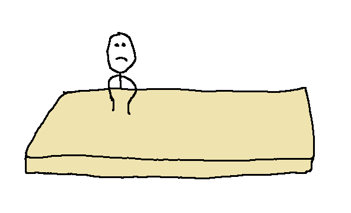

Koszinusznak ki akarták találni a horoszkópát
Amikor német órán mindenki el mondta a horoszkópát, Koszinusz csak annyit tudott mondani, hogy "arrowy" a horoszkópa. Sajnos a német tanár nem tudta kitalálni, hogy ezzel mire utal, ezért megpróbálta kitalálni Koszinusz horoszkópát. Az egyetlen dolog, ami illett Koszinuszra, az a Kos volt, ezért ezt, mondta ki, amire Szinusz, Koszinusz, Tangens és Zevidu Brendon 8.C-s diák el kezdett nevetni, mert hiába illik rá, nem az a horoszkópa.